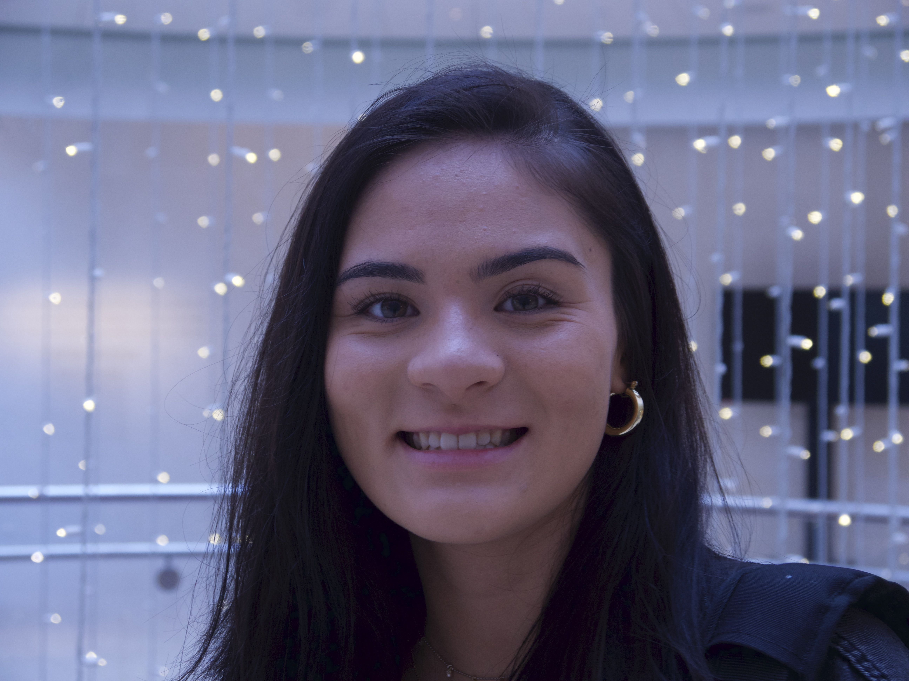

About Me

I am a senior at the University of Wisconsin-Madison pursuing a Bachelors in Communication Science & Rhetorical Studies as well as a certificate in Digital Studies.
I am a communicator, critical thinker, problem solver, and an enthusiastic individual who has a thirst for learning.
I am passionate about exploring the digital sphere in different industries and hope to inspire, innovate, and bring a new lense to my future employers.
In my free time, I enjoy playing guitar and writing my own music. I am also an adventurous person who loves traveling and experiencing new places!